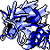
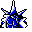

#130
Gyarados
Water
Rarely seen in the wild. Huge and vicious, it is capable of destroying entire cities in a rage
Base stats Total 480
HP95
Attack125
Defense79
Speed81
Special100
Details
- Species
- Atrocious
- Height
- 21'04"
- Weight
- 518.0 lb
- Catch rate
- 45
- Base exp
- 214
- Growth
- Slow
Level-up moves
LevelMoveType
StartBiteDark
StartDragon RageDragon
StartLeerNormal
StartHydro PumpWater
Lv 9Water GunWater
Lv 17Focus EnergyNormal
Lv 20BiteDark
Lv 24BubblebeamWater
Lv 30WaterfallWater
Lv 33CrunchDark
Lv 36Razor Wind
Lv 38Dragon ClawDragon
Lv 42Hydro PumpWater
Lv 46OutrageDragon
Evolution
Evolves from Magikarp
Where to find
TM / HM
TM04 CrunchTM06 ToxicTM08 Body SlamTM09 Take DownTM10 Double-EdgeTM11 BubblebeamTM12 Water GunTM13 Ice BeamTM14 BlizzardTM15 Hyper BeamTM23 Dragon RageTM24 ThunderboltTM25 ThunderTM26 EarthquakeTM31 MimicTM32 Double TeamTM33 ReflectTM34 BideTM37 FlamethrowerTM38 Fire BlastTM44 RestTM45 Thunder WaveTM50 SubstituteHM03 SurfHM04 Strength